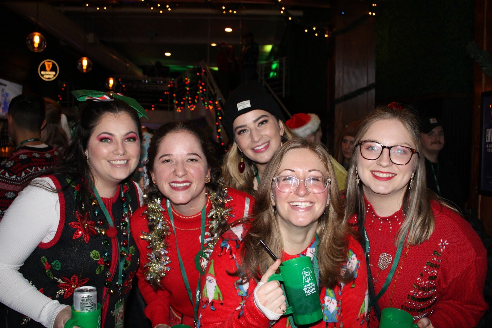
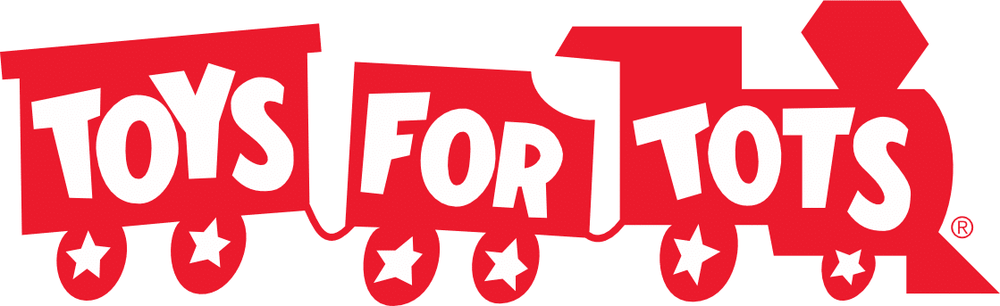

Ugly sweaters for a good cause
Pick a street, grab your holiday mug and lanyard, and crawl Milwaukee's best bars decked out for Christmas. Every ticket sends a donation to Toys for Tots — good friends, mugs full of cheer and the best Christmas party in the city.
Your ticket includes
The mug
- A holiday drinking mug, yours to keep
- Fill it with cheer & beer along the way
The lanyard
- Passport lanyard with food & drink specials
- No cover charges with your lanyard
The streets
- Your pick of three Milwaukee streets
- The best Christmas party in the city
The cause
- A donation to Toys for Tots with every ticket
- Over $22,000 raised since 2013
$22,000+
raised for Toys for Tots since 2013

The day of
- Mug & lanyard pickup is before the crawl, 10:30–11:30am at your street's pickup bar
- Have your QR code ready, and arrive early to beat the line
- The ugliest of sweaters are strongly encouraged
- Drink responsibly, 21+, bring ID
- No refunds — we order the mugs and lanyards in advance
- Plan a safe way home, and drink water too